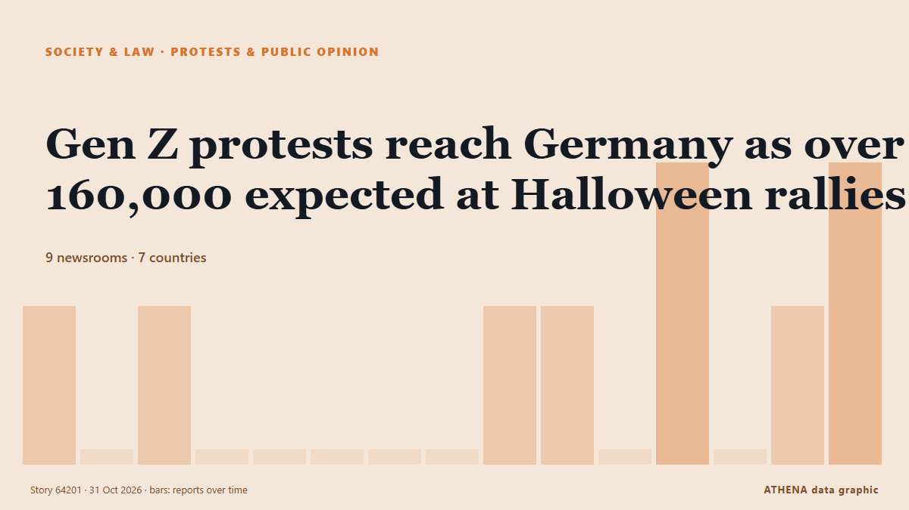

Proteste und Meinung
| 18. Okt. | 0 |
|---|---|
| 19. Okt. | 1 |
| 20. Okt. | 0 |
| 21. Okt. | 1 |
| 22. Okt. | 1 |
| 23. Okt. | 3 |
| 24. Okt. | 1 |
| 25. Okt. | 0 |
| 26. Okt. | 6 |
| 27. Okt. | 2 |
| 28. Okt. | 2 |
| 29. Okt. | 0 |
| 30. Okt. | 6 |
| 31. Okt. | 0 |
Schlagzeilen werden auf Englisch angezeigt, wie veröffentlicht.

Gen Z protests reach Germany as over 160,000 expected at Halloween rallies
Demands include opposing compulsory military service and investing in education amid rising costs. von The Straits Times
Europe's Gen Z protesters just want to be heard
MAYA Gourdel, a 19-year-old student in Brussels, sits at a desk writing slogans against those running her country: “If we burn, you burn with us!” von New Straits Times
Macron braces France for another 'high-risk' Saturday of protests
Macron signals 'significant announcements and progress aimed at bringing about changes' von Anadolu Agency (English)
French interior minister to deploy 70,000 police for Halloween protests
PARIS, Oct 29 - French Interior Minister Laurent Nunez said that this Saturday was looking like \"a very high risk\" day for public order and that he would again deploy 70,000 security forces to try… von The Straits Times
France's Yellow Vest movement calls new protests for October 31st
France's Yellow Vest movement, which has helped organise protests rocking the country, called Saturday for new demonstrations on October 31. von The Local France
Protesters storm Serbian pro-Vucic TV station after his loss at polls
President Vucic called the incident an attack on free speech and the freedom of journalism. von Al Jazeera English
French Senate Passes Bill to Make Protesters Pay for Unrest Damage
However critics warned the move could curb the right to protest. von The Straits Times
Anti-mega dam protest rocks Arunachal capital
The protestors in Itanagar want the Siang Upper Multipurpose Project plan scrapped and arrested activists released. von The Hindu
Serbia’s ‘students’ celebrate for a second night after election victory
Thousands gathered on the streets of Belgrade for a second night to celebrate the student-led movement's victory. von Al Jazeera English
Albania opposition disrupts parliament session after violent street protests
TIRANA, Oct 29 - Opposition lawmakers in Albania disrupted a parliament session by letting off flares on Thursday following weeks of violent anti-government protests called by students demanding the… von The Straits Times
Employers must prioritise locals before hiring foreign workers, says Ramanan
Employers must use MyFutureJobs portal to seek local candidates first. von Malaysiakini
The Long March, told through what remains
A village's story of change: From the Long March to today. von CGTN (China)
Hundreds protest in Tel Aviv, Jerusalem and Haifa, call for Jewish-Arab government
Demonstrators gathered to demand Jewish-Arab cooperation as the opposition has won 67 seats, including 19 held by Arab parties, leaving Eisenkot's bloc short of a majority without Arab support. von Haaretz (English)
Police made 1,314 arrests in France's protests: government
Over 1,300 arrests were made across France during protests against high living costs, with reports of violence and injuries among police officers. von Arab News
Italian PM slams 'shameful' release of alleged protest organiser
Italian Prime Minister Giorgia Meloni on Wednesday slammed as "shameful" the decision by a judge to dismiss accusations against a campaigner arrested on terrorism charges for allegedly seeking to… von The Local Italy
Portugal housing protests continue after police clear camps
Demonstrators vow to continue their campaign to call for affordable housing in Portugal after police cleared tent camps and arrested at least 55 people. von DW English
Istanbul Bar Association elects new president
Lawyers at the Istanbul Bar Association, one of the world’s largest bar associations, cast their ballots on Oct. von Hürriyet Daily News
Israeli forces kill man with disability in southern Syria, authorities say
Israeli forces deploy snipers on rooftops, raid houses in Jamlah village in western Daraa. von Anadolu Agency (English)
More than 400,000 protest across France, challenging Macron as Paris clashes erupt
Clashes erupted in Paris as a mass march drew to a close Saturday, with more than 400,000 people rallying across France over school funding and soaring living costs in a fresh challenge to President… von PBS NewsHour